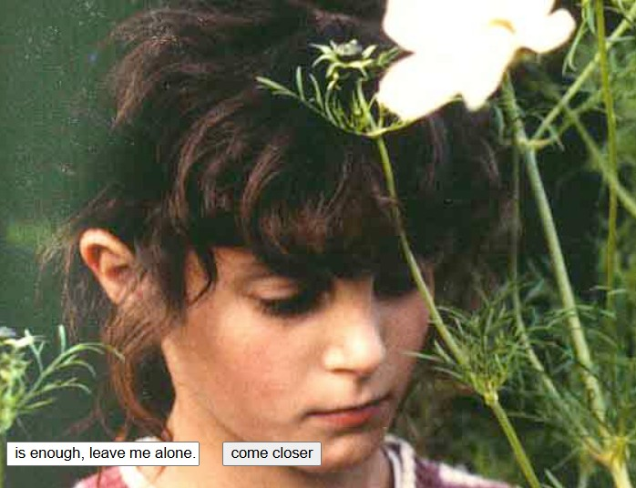
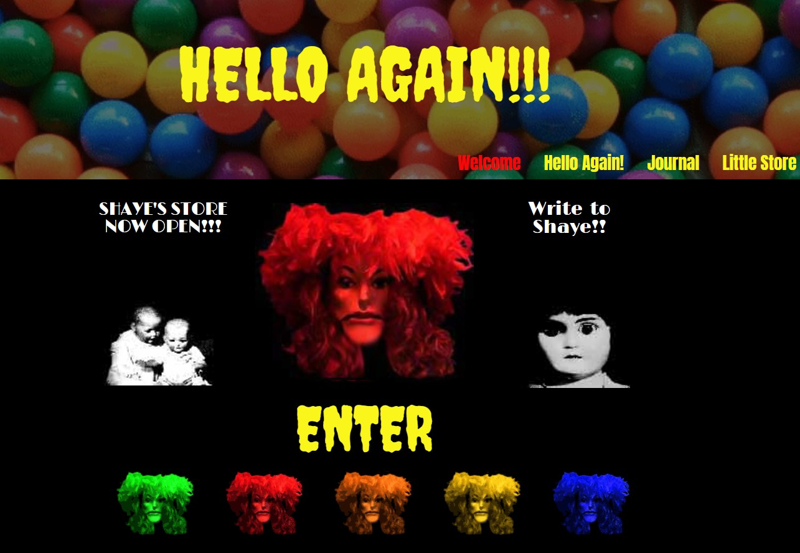
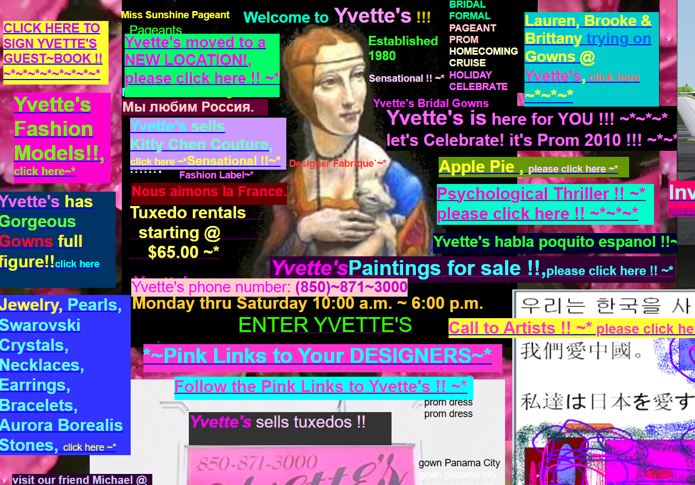

This exhibition serves as a collection of net art pieces that illustrate the narrative of an eccentric and troubled website creator. While the websites present themselves as the author's genuine blog, advertisements, or business portfolios, both the alleged creator and world-setting are pieces of fiction created by obscured artists.
The slang term "Unfiction" is used to describe pieces of fiction that claim to be non-fictional. The websites compiled on this exhibition were all created during the late 90s-early 2000s, and serve as early examples of immersive unfictional net art.
The narrative tone and aesthetics of these pieces range from absurd to somewhat disturbing, and are all presented as blogs/portfolios under the artistic control of a uniquely troubled "author". to reflect these artistic perspectives, the sites contain loud, flashy, or disturbing imagery, as well as sprawling webpages with disjointed narration accessible through hyperlinks and clickable images.

Title: "Mouchette.org"
Creator: Martine Neddam
Date: 1996
A project created by Martine Neddam posed as the creation of a 13 year old girl in Amsterdam. The plot is revealed through poetry, reccurring imagery, and symbolism. In the early years following the website's creation, visitors were able to submit their emails, which would lead them to receive emails from the fictional "Mouchette".
The name "Mouchette" is derived from a 1967 french film of the same name. The source film details the sexual abuse and eventual suicide of a young french girl, which can be observed as the project's narrative inspiration through it's themes of innocence, sexuality, and corrupted youth.
Aside from Mouchette, Neddam has created other online aliases with their own subsequent blogs, such as "David Still" and "XiaoQian". Mouchette.org serves as one of the earliest examples of internet unfiction, through her use of virtual personas to serve as fictional ghost-creators for her net art pieces.

Title: "shayesaintjohn.us"
Creator: Eric Fournier
Date: 2004
A project created by conceptual artist Eric Fournier, depicting the website of a fictional creator "Shaye Saint John". The website contains a collection of hyperlinks that link to assorted loud noises, confusing webpages, disturbing imagery, and an overarching narrative describing the life of Shaye Saint John, a fictional supermodel that was disfigured in an accident and fused back together with doll parts.
Shaye Saint John is the main character of a larger surrealist horror project created by Fournier, which took form as a series of short films. The films were recorded on VHS video tapes and shown at a number of bars and clubs throughout Los Angelos and Chicago between the years of 1998 and 2002. The content of these films are now viewable on the "Empty Socket Productions" youtube channel, and primarily consist of Fournier dressed in a wig and doll mask, playing the character of Shaye, a rockstar celebrity obsessed with beauty, perfection, and fame.
Sadly, Fournier passed away in 2010 due to health complications from alchoholism. The project's narrative implied that Fournier likely used Shaye's character as an outlet to express his own artistic ideas and identity--beneath the protective veneer of a burned doll-mask and wig. Fournier was a prominent member the punk scene of Bloomington, Indiana in the 1980s, an influence that is visible in Shaye's stylistic choices. Much like Fournier, Shaye is is a passionate artist and performer despite her own struggles. Shaye self describes herself as "THE WORLD-RECORD HOLDER FOR HAVING THE MOST PROBLEMS!", potentially reflecting Fournier's own struggles in juggling addiction with an intense artistic drive.

Title: "Yvette's Bridal Formal"
Creator: Sean Terrance Best
Date: 200X (exact date unknown)
A project created by a horror novelist and web designer Sean Terrance Best that poses as a cluttered storefront website for a bridal and formal boutique in florida, but slowly devolves into surreal absurdity-- with poetry, artwork, and discussion of conspiracy theories surrounding aliens, satanism, and the Easter bunny. The project's exact creation date is unknown, but I was able to find forum posts dated back to 2010 discussing the website's existence, coining it as the "ugliest website ever". Due to the project's obscurity and Sean's minimal online presence, the intention behind the website's creation was debated for many years on online forums and platforms such as Reddit. However, in a youtube video entitled "The Internet's Most Bizarre Website: Yvette's Bridal Formal", Best allegedly reveals in email correspondance that the website was commissioned by a genuine Bridal Formal company under the same name, but was disowned due to its confusing layout and provocative themes. However, Best began viewing the project as a personal art piece, and continued to maintain the site.
Due to the Best's lack of commentary, and the website's absurd and confusing structure, it is difficult to interpret the project's narrative. Many internet users have questioned whether the devolvement into conspiracy theories reflect Best's true beliefs, or if the project is an unfiction piece portaying the derangements of an unstable bridal shop owner. Regardless, the project serves as an notable piece of absurdist net art in internet history.